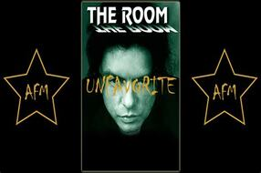

Películas
-
"Battlefield Earth" (2000)

En el año 3000, un joven se enfrenta a un líder alienígena y sus secuaces por el robo de los recursos naturales de la Tierra.
-
Gato con botas: el último deseo
El Gato con Botas descubre que, debido a su pasión por la aventura, ha gastado ya 8 de sus 9 vidas. Por tanto, emprende un peligroso viaje en busca del legendario Último Deseo para solicitar que le restauren las vidas que ya perdió.
-
'Historias de San Valentin' (2010)
Residentes de Los Ángeles se enamoran y se desenamoran durante un día muy especial, el Día de San Valentín..
-
The Room (2003)
La prometida (Juliette Danielle) de un banquero (Tommy Wiseau) exitoso seduce y manipula a su mejor amigo (Greg Sestero).
-
Catwoman(2004)
Patience trabaja para una empresa de cosméticos y escucha una conversación secreta sobre un nuevo producto. Por ese motivo, sus jefes casi la matan, pero vuelve con fuerza y habilidades sobrehumanas en forma de Gatúbela.
-
"Batman & Robin" (1997)
Batman y su compañero Robin deben enfrentarse a un nuevo villano, el Sr. Frío, que intentará congelar a todos los habitantes de Gotham.